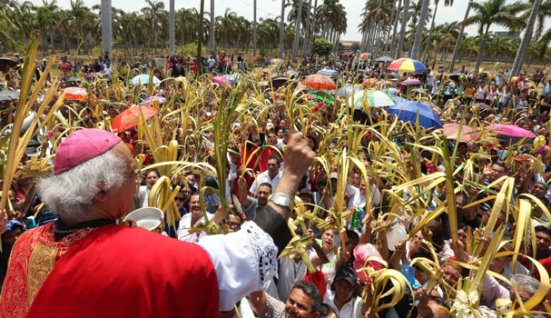

Religiones que celebran la Semana Santa
Catolicos
La Semana Mayor para los católicos es la época en la que se recuerda y celebra los hechos más relevantes en la vida de Jesús de Nazaret (la Pasión, Muerte y Resurrección), comenzando con el llamado Domingo de Ramos y finalizando el Domingo de Resurrección o también llamado de Pascua.
Tiene lugar después de la Cuaresma, el ciclo de cuarenta días que abarca desde el Miércoles de Ceniza hasta el Jueves Santo. Concretamente, la celebración comienza el domingo de Ramos y finaliza el Sábado Santo, aunque en algunos lugares se adelanta al viernes anterior (el de Dolores) y se prolonga hasta el Domingo de Resurrección.

Cristianos evangélicos
Para la iglesia cristiana, la Semana Santa es el tiempo para recordar la muerte de Cristo. Para conmemorarla, se congregan en una jornada de oración y adoración, la cual inicia el Jueves Santo a las 9:00 de la noche y se extiende por 24 horas.
Testigos de Jehová
Para los testigos de Jehová la Semana Santa comienza el 14 de abril, o 14 de Nisán, y comprende desde la puesta de sol hasta la próxima.
De acuerdo con su tradición, la única acción que Jesús mandó a conmemorar en esta fecha es la última cena; por esto, la comunidad se reúne en el Salón del Reino para recordar esta acción, reflexionar sobre ella y el significado de la muerte y resurrección de Jesús, como rey mas no como Dios todopoderoso.
En esta ceremonia, al igual que lo hizo Jesús, se reparte el pan y el vino, pero no todos son elegidos de participar de esta cena, pues este honor depende de los méritos de cada persona..
Mormones
La Semana Santa de los mormónes inicia desde el Lunes Santo, y como suelen hacer muy habitualmente durante muchas semanas del año, se reúnen en lo que llaman la “noche del hogar” para recordar pasajes de la Biblia protestante y, sobre todo, de sus libros sagrados. Son momentos de estar en familia, de compartir, y recordar cómo Jesús, que era un hombre según ellos, sólo un hombre, se hizo Dios también, otro dios, por sus propias fuerzas y comportamiento, según ellos afirman, y esto mismo es lo que ellos también quieren hacer, convertirse en dioses y regentar el gobierno de algunos sistemas solares del universo.
Aplicacion Dos, JACO
Guerrero
Uno de los atractivos turísticos más importantes que tiene el estado de Guerrero es la celebración de la Semana Santa en Taxco, ceremonia litúrgica conmovedora e impresionante, única en toda la República Mexicana. Parte fundamental en su desarrollo lo constituyen las dramáticas procesiones donde las imágenes religiosas son acompañadas, a lo largo de las empedradas calles de la ciudad, por cofradías de penitentes encapuchados, vestidos de negro y arrastrando cadenas que llevan sujetas a sus tobillos.
Aplicacion Uno, JACO